Next: กิจกรรม
Up: ทฤษฎีคิว
Previous: ตัวอย่าง:
Contents
Index
ในการสร้างแบบจำลองในการวิเคราะห์ประสิทธิภาพ นอกจากตัวแปรสุ่มต่างๆ ที่เราใช้ในการคำนวณแล้ว เรายังใช้ลำดับต่างๆ มากมาย และกลุ่มของตัวแปรสุ่มที่เป็นฟังก์ชั่นของเวลา
ตัวอย่างเช่นให้ 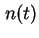 เป็นจำนวนของงานที่อยู่ในตัวประมวลผลกลางในระบบคอมพิวเตอร์ ถ้าเรานำระบบคอมพิวเตอร์ที่เหมือนกันมาจำนวนหลายระบบ และเฝ้าสังเกตจำนวนงานที่ตัวประมวลผลกลางตามฟังก์ชั่นของเวลา เราจะพบว่า เป็นตัวแปรสุ่ม
เพื่อที่จะระบุพฤติกรรมดังกล่าว เราจำเป็นต้องระบบการกระจายของ ทุกค่าเวลา  เช่นเดียวกัน ค่าเวลาการรอรับบริการ 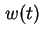 เป็นฟังก์ชั่นสุ่มที่แปรผันตามเวลา ฟังก์ชั่นสุ่มลักษณะดังกล่าวเรียกว่า กระบวนการสโตคาสติก (Stochastic Process) กระบวนการดังกล่าวช่วยในการแสดงสถานะของระบบคิวได้
เช่นเดียวกัน ค่าเวลาการรอรับบริการ 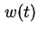 เป็นฟังก์ชั่นสุ่มที่แปรผันตามเวลา ฟังก์ชั่นสุ่มลักษณะดังกล่าวเรียกว่า กระบวนการสโตคาสติก (Stochastic Process) กระบวนการดังกล่าวช่วยในการแสดงสถานะของระบบคิวได้
กระบวนการสโตคาสติกที่ใช้กันมากในทฤษฎีคิวมีดังต่อไปนี้
- กระบวนการสถานะต่อเนื่อง และกระบวนการสถานะไม่ต่อเนื่อง (Discrete-State and Continuous-State Processes): ``กระบวนการ'' (Process) จะเป็นแบบต่อเนื่องหรือแบบไม่ต่อเนื่องขึ้นอยู่กับค่าของสถานะของกระบวนการนั้นๆ
ถ้าจำนวนของสถานะที่เป็นไปได้ของกระบวนการมีจำนวนจำกัด หรือนับได้ กระบวนการนั้นเป็นแบบสถานะไม่ต่อเนื่อง ตัวอย่างเช่น ถ้าจำนวนงานในระบบ มีค่าเป็นแบบไม่ต่อเนื่องเช่น
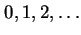 เป็นกระบวนการแบบสถานะไม่ต่อเนื่อง
เวลาที่รอรับบริการ (Waiting Time) w(t) สามารถเป็นค่าเวลาใดๆ ก็ได้ในจำนวนจริง ดังนั้นจึงเป็นกระบวนการสถานะต่อเนื่อง
กระบวนการสโตคาสติกแบบสถานะไม่ต่อเนื่อง เรียกว่าห่วงโซ่สโตคาสติก (Stochastic Chain)
- กระบวนการมาร์คอฟ (Markov Processes): ถ้าสถานะในอนาคตของกระบวนการไม่ขึ้นอยู่กับอดีต และขึ้นอยู่กับสถานะปัจจุบันเพียงอย่างเดียว กระบวนการดังกล่าวเรียกว่า ``กระบวนการมาร์คอฟ''
คุณสมบัติดังกล่าวเรียกว่าคุณสมบัติมาร์คอฟ ซึ่งทำให้การวิเคราะห์ทำได้ง่ายขึ้น เนื่องจากไม่จำเป็นต้องทราบการเปลี่ยนแปลงทั้งวัฏสงสาร เพียงแค่รู้ถึงสถานะปัจจุบันก็เพียงพอ
กระบวนการมาร์คอฟแบบสถานะไม่ต่อเนื่องเรียกว่า ห่วงโซ่มาร์คอฟ (Markov Chain)
- กระบวนการเกิด-ดับ (Birth-Death Processes): กระบวนการมาร์คอฟแบบสถานะไม่ต่อเนื่องที่มีการเป็นแปลงสถานะจำกัดเพียง สถานะข้างเคียง เรียกว่า ``กระบวนการเกิด-ดับ''
สำหรับกระบวนการเกิด-ดับ สามารถจะแสดงสถานะของกระบวนการโดยตัวเลขจำนวนเต็ม โดยที่ตัวเลขแสดงสถานะของระบบที่สถานะ  และจะเปลี่ยนไปยังสถานะข้างเคียงคือ
และจะเปลี่ยนไปยังสถานะข้างเคียงคือ  และ
และ  เท่านั้น
เท่านั้น
ตัวอย่างเช่น จำนวนงานในระบบคิวที่มีเครื่องบริการหนึ่งเครื่อง และมีงานเข้าใช้ระบบครั้งละหนึ่งงาน สามารถแสดงได้โดยกระบวนการเกิด-ดับ โดยที่เลขจำนวนเต็มแสดงสถานะของกระบวนการ เมื่อมีงานเข้าใช้ระบบ กระบวนการจะเพิ่มสถานะขึ้นหนึ่ง +1 (เกิด) และเมื่องานเสร็จจากการบริการ (ออกงานระบบ หรือ ดับ) กระบวนการจะลดสถานะลงหนึ่ง -1
- กระบวนการพัวซอง (Poisson Processes): ถ้าเวลาระหว่างการเข้าใช้ระบบเป็น IID และมีการกระจายแบบ Exponential จำนวนงานที่เข้าใช้ระบบ ในช่วงการทำงาน 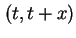 จะมีการกระจายแบบพัวซอง ดังนั้นกระบวนการเข้าใช้ระบบจะถูกเรียกว่ากระบวนการพัวซอง หรือ กระแสการเข้าใช้งานระบบแบบพัวซอง
กระบวนการพัวซองใช้อย่างแพร่หลายในทฤษฎีคิว และมีคุณสมบัติดังต่อไปนี้
- เมื่อรวมกระแสการเข้าใช้งานระบบแบบพัวซองที่มีค่าเฉลี่ย
 จำนวน
จำนวน  กระแสเข้าด้วยกัน จะได้กระแสการเข้าใช้งานระบบแบบพัวซองที่มีค่าเฉลี่ย
กระแสเข้าด้วยกัน จะได้กระแสการเข้าใช้งานระบบแบบพัวซองที่มีค่าเฉลี่ย  โดยที่
โดยที่
แสดงในรูปที่ 3.6
Figure 3.6:
การรวมกระแสการเข้าใช้งานระบบแบบพัวซอง
|
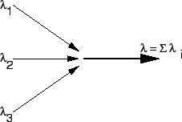
|
- เมื่อแยกกระแสการเข้าใช้งานระบบแบบพัวซองออกเป็นกระแสย่อยจำนวน กระแส โดยที่มีความน่าจะเป็น 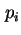 ในการแตกแยกเป็นกระแสย่อย
 แต่ละกระแสย่อย จะมีค่าเฉลี่ยเท่ากับ 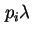
แต่ละกระแสย่อย จะมีค่าเฉลี่ยเท่ากับ 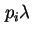
Figure 3.7:
การแยกกระแสการเข้าใช้งานระบบแบบพัวซองออกเป็นกระแสย่อยจำนวน กระแส
|
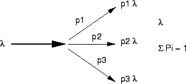
|
- เมื่อกระแสการเข้าใช้งานระบบคิวที่มีเครื่องบริการหนึ่งเครื่อง มีค่าเฉลี่ยเท่ากับ และเครื่องบริการมีการกระจายของเวลาบริการเป็น Exponential กระแสของงานที่ออกจากระบบก็มีลักษณะเป็นพัวซองที่มีค่าเฉลี่ย เท่ากัน โดยที่อัตราการเข้าใช้งานระบบ จะต้องน้อยกว่าอัตราความสามารถในการบริการแสดงในรูปที่ 3.8
Figure 3.8:
กระแสงาน: เมื่อกระแสการเข้าใช้งานเป็นพัวซอง กระแสของงานที่ออกจากระบบมีลักษณะเป็นพัวซอง
|
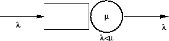
|
- ในกรณีที่เป็นระบบคิวที่มีเครื่องบริการ
 เครื่อง และกระแสการเข้าใช้งานเป็นพัวซองที่มีค่าเฉลี่ยเท่ากับ กระแสของงานที่ออกจากระบบก็มีลักษณะเป็นพัวซองที่มีค่าเฉลี่ย เช่นกัน โดยที่อัตราการเข้าใช้งานระบบ จะต้องน้อยกว่าอัตราความสามารถในการบริการ 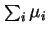 และเครื่องบริการมีการกระจายของเวลาบริการเป็น Exponential แสดงในรูปที่ 3.9
เครื่อง และกระแสการเข้าใช้งานเป็นพัวซองที่มีค่าเฉลี่ยเท่ากับ กระแสของงานที่ออกจากระบบก็มีลักษณะเป็นพัวซองที่มีค่าเฉลี่ย เช่นกัน โดยที่อัตราการเข้าใช้งานระบบ จะต้องน้อยกว่าอัตราความสามารถในการบริการ 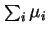 และเครื่องบริการมีการกระจายของเวลาบริการเป็น Exponential แสดงในรูปที่ 3.9
Figure 3.9:
กระแสงาน: เมื่อกระแสการเข้าใช้งานเป็นพัวซอง กระแสของงานที่ออกจากระบบมีลักษณะเป็นพัวซอง กรณีที่เป็นระบบคิวที่มีเครื่องบริการ เครื่อง
|
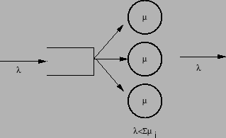
|
Next: กิจกรรม
Up: ทฤษฎีคิว
Previous: ตัวอย่าง:
Contents
Index
Vara Varavithya
2002-03-09